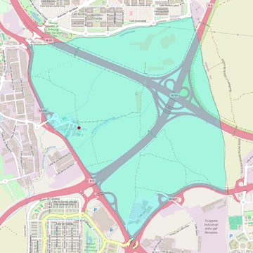

Nuestra Señora de la Anunciación
- Arciprestazgo
- Fuenlabrada
- Población
- Fuenlabrada
- Dirección postal
- Parque Miraflores. Bloque 56-Bjo-B
- Código postal
- 28942
- Extensión
- 4,93 km² (493 ha)
- Teléfono
- 916 151 012
- Correo electrónico
- nsanunciacion-fuenlabrada@diocesisgetafe.es
- Información demográfica
- De la parroquia · De la población (Fuenlabrada) · Del arciprestazgo (Fuenlabrada)
- Resumen para imprimir
- La parroquia en una hoja (A4)


Descargar mapaLímites según decreto
“Partiendo de la confluencia de la autovía A-506 (de Móstoles a Pinto) con la carretera M-407, arrancan por el eje de la carretera M-407 hasta el término municipal de Leganés (en dirección noreste); continúan por los límites de los términos municipales de Fuenlabrada y Leganés (en dirección noroeste), por los límites de los términos municipales de Fuenlabrada y Alcorcón (en dirección oeste), por los límites de los términos municipales de Fuenlabrada y Móstoles (en dirección sureste) y por el eje de la autovía A-506 (en dirección sureste) hasta la confluencia con la carretera M-407, punto de partida”. (Decreto de rectificación de límites, 25-5-2000; Boletín Oficial, Junio-2000, pág. 551-552)
¿Algún dato de esta parroquia es incorrecto o ha cambiado? Comuníquenoslo.